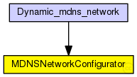

This documentation is released under the Creative Commons license
This documentation is released under the Creative Commons license(no description)
The following diagram shows usage relationships between types. Unresolved types are missing from the diagram. Click here to see the full picture.
The following diagram shows inheritance relationships for this type. Unresolved types are missing from the diagram. Click here to see the full picture.
| Name | Type | Description |
|---|---|---|
| Dynamic_mdns_network | network | (no description) |
| Name | Type | Default value | Description |
|---|---|---|---|
| traffic_model | string | "CBR" | |
| distribution | string | "GAUSSIAN" | |
| num_resolvers | int | 10 | |
| num_private | int | 0 | |
| max_friends | int | 0 | |
| min_friends | int | 0 | |
| max_services | int | 4 | |
| min_services | int | 1 | |
| querying_enabled | bool | true | |
| service_usage_probability | string | "GAUSSIAN" | |
| private_service_ratio | double | 0.0 | |
| average_uptime | double | 600s | |
| max_online_duration | double | 3600s |
simple MDNSNetworkConfigurator { parameters: string traffic_model = default("CBR"); string distribution = default("GAUSSIAN"); int num_resolvers = default(10); int num_private = default(0); int max_friends = default(0); int min_friends = default(0); int max_services = default(4); int min_services = default(1); bool querying_enabled = default(true); string service_usage_probability = default("GAUSSIAN"); double private_service_ratio = default(0.0); double average_uptime @unit(s) = default(600s); double max_online_duration @unit(s) = default(3600s); }
This documentation is released under the Creative Commons license